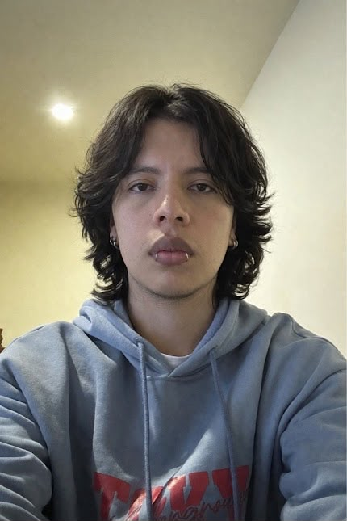
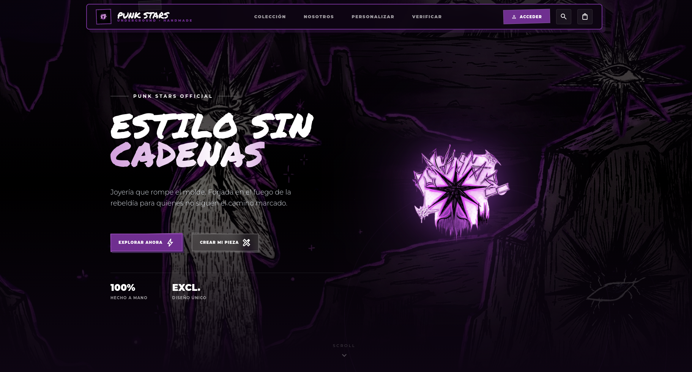

Soy Johan Yandun, Desarrollador Full Stack Jr. (Ingeniería de Sistemas, 8.º semestre). Trabajo en la intersección entre desarrollo web end-to-end, agentes con LLMs y calidad de datos.

Construyo aplicaciones web en producción cubriendo frontend, backend, modelado de base de datos y testing. Mi enfoque particular está en la intersección entre desarrollo de software, agentes autónomos con LLMs y calidad de datos.
Soy autor de un proyecto open source publicado en GitHub con adopción real de la comunidad. Actualmente busco mi primera oportunidad profesional en Desarrollo de Software, IA aplicada o Data QA.
Un stack pensado para construir productos completos: interfaz, servidor, datos y la capa de inteligencia encima.
Dos productos personales, de extremo a extremo: un agente autónomo self-hosted y una plataforma de e-commerce con verificación de autenticidad.

Bot de Telegram sobre OpenCode con memoria persistente en tiempo real, búsqueda semántica opcional y soporte multi-idioma — sin depender de suscripciones ni API keys de pago.
TypeScript · Docker · Model Context Protocol · Ollama / OpenAI embeddings
Plataforma de e-commerce de joyería artesanal construida de extremo a extremo: catálogo, piezas exclusivas, verificación de autenticidad, certificados digitales y panel de administración.
React · Tailwind CSS · Node.js · Express · PostgreSQL
Formación en fundamentos de ingeniería de software, bases de datos, estructuras de datos y desarrollo de aplicaciones.
Seminario cursado y aprobado, enfocado en tendencias actuales de ingeniería de software e informática aplicada.
Disponible para roles de Desarrollo de Software, IA aplicada o Data QA. Respondo rápido por correo o LinkedIn.